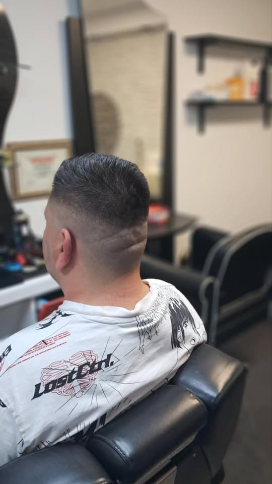

Tunsori & Fade
Tuns clasic, tunsori moderne și fade curat, executate pe stilul și pe forma feței tale.
Frizerie pentru bărbați · Tulcea
Tunsori pentru bărbați, fade curat și barbă conturată la milimetru — lucrate cu răbdare, pe forma feței tale. La Oana Barber Shop, în Tulcea, pleci de fiecare dată exact cu look-ul pe care ți-l dorești.
Cine suntem
Oana Barber Shop este o frizerie pentru bărbați din Tulcea, pe Strada 1848. Ne-am făcut un nume dintr-un singur lucru: tunsori curate și barbă conturată corect, gândite pentru fiecare client în parte.
De la fade curat și tuns clasic, la aranjat și conturat barbă — lucrăm cu atenție la detaliu, într-un spațiu luminos, primitor și relaxat. Nimic pe fugă, totul dus până la ultimul fir.
„Tuns și barbă — cum trebuie, de fiecare dată.”

Ce facem
Tunsori, barbă și styling — adaptate stilului tău. Pentru tarife și programare, sună-ne direct.
Tuns clasic, tunsori moderne și fade curat, executate pe stilul și pe forma feței tale.
Aranjat, conturat și definit — pentru linii curate și o barbă îngrijită.
Spălare, finisaj și styling final — ca să pleci gata aranjat, direct din scaun.
💈 Vrei să știi prețul exact sau să prinzi un loc? Sună la 0740 292 851 — îți spunem tarifele și te programăm.
De ce clienții revin
Ce apreciază clienții la fiecare vizită.
✂️Tunsori lucrate cu răbdare și atenție la detaliu — nu pe fugă, nu pe șablon.
— Atenție la detaliu
💈Fade curat și barbă conturată la milimetru, exact cum trebuie de fiecare dată.
— Fade & barbă
🪑Spațiu primitor și o atmosferă relaxată — pleci aranjat și bine dispus.
— Atmosferă relaxată
Vezi lucrări și mesaje de la clienți pe pagina de Facebook.
Contact & Locație
Strada 1848, nr. 17
Cartier E3 (Tudor Vladimirescu) · Tulcea 820190, jud. Tulcea
Programează-te telefonic sau printr-un mesaj pe Facebook. Îți spunem tarifele și primul loc liber.